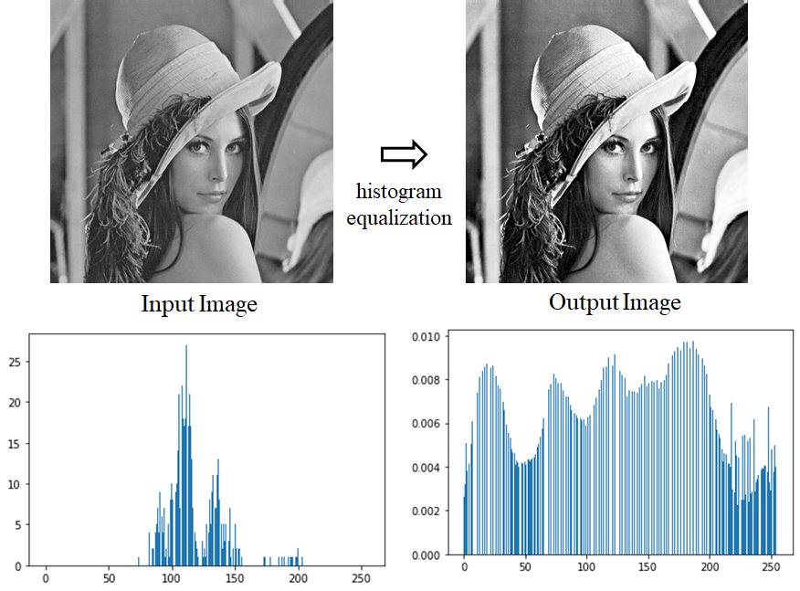

Brief Description: Histogram equalization is an image processing technique used to improve contrast. The objective is to design a transformation that redistributes the pixel intensity values so that they span the full range more evenly. This makes the histogram of the resulting image becomes closer to a uniform (flat) distribution, making details in both dark and bright regions easier to see.
